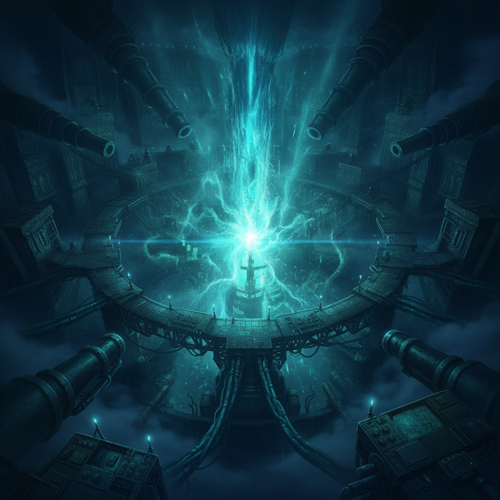
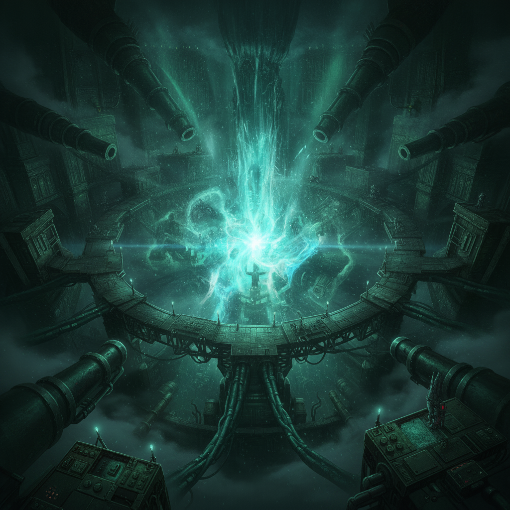
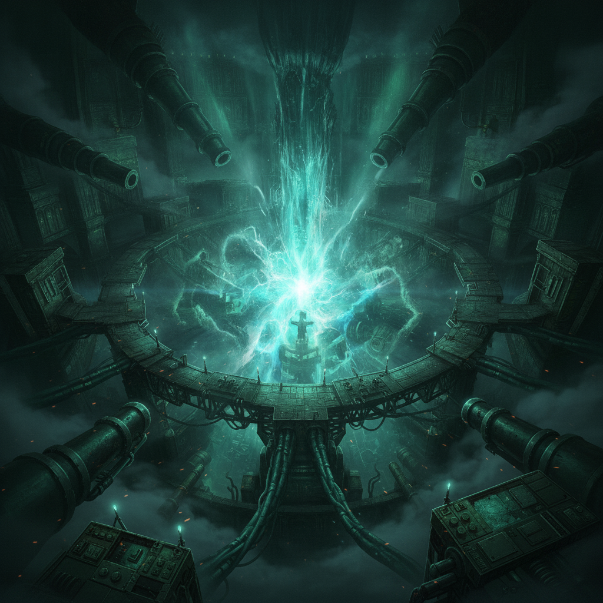

The Inner Sanctum. The heart of the enemy. They expect a hero. They get a warlord.

I have developed strategic-class weaves. Weapons on the order of nukes. Isolde's precision aims them. Ember's raw current powers them. Seraphine's braided subtlety hides them. Wren's forbidden craft smuggles them into place.
The four assets I catalogued in Act One, now turned to one monstrous working.

The boss falls. Not to a coalition, but to a single, overwhelming act of force. There is no negotiation. No mercy.
There is no wedding. There is a dynasty, forged in fire and vengeance.